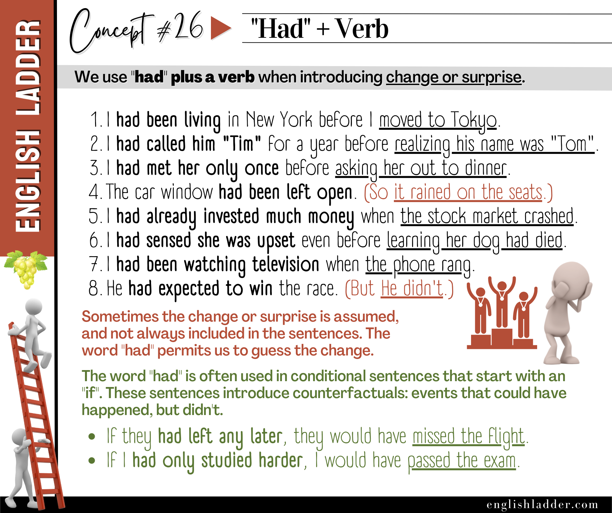

Item 01
I had been living in New York before I moved to Tokyo.
Reveal answer
Correct answer: b Feedback: The past perfect “had been living” indicates the action of living in New York was completed before moving to Tokyo.
Grammar Concepts #26
This rebuilt lesson keeps the original concept image, tightens the structure, and turns the explanation into a clearer self-study guide.

The past perfect tense, formed using “had” plus a past participle (verb in its past participle form), is a critical aspect of English grammar. It is primarily used to express actions that were completed before another action or specific time in the past, introduce changes or surprises, and formulate conditional sentences about unreal past situations.
Purpose: To show that one past action was completed before another past action or specific time.
More Examples:
Purpose: To emphasize that a previous action or state led to an unexpected or significant result.
More Examples:
Purpose: To describe unreal past conditions and their possible consequences. These sentences often start with “if” and discuss hypothetical scenarios.
More Examples:
A. Sequence of Events
B. Change or Surprise
C. Conditional Sentences
The past perfect tense (“had” + past participle) is essential for describing actions completed before another past action or time, introducing changes or surprises, and forming conditional sentences about unreal past situations. Mastering this tense will enhance your ability to narrate sequences, emphasize significant results, and discuss hypothetical past scenarios accurately.
Decide which of the two rephrasings, a) or b), matches the meaning of the sentence.
I had been living in New York before I moved to Tokyo.
Correct answer: b Feedback: The past perfect “had been living” indicates the action of living in New York was completed before moving to Tokyo.
I had called him “Tim” for a year before realizing his name was “Tom”.
Correct answer: a Feedback: The past perfect “had called” indicates calling him “Tim” was completed before realizing his actual name.
I had met her only once before asking her out to dinner.
Correct answer: b Feedback: The past perfect “had met” shows the action of meeting her occurred before asking her out to dinner.
The car window had been left open. (So it rained on the seats.)
Correct answer: a Feedback: “Had been left open” indicates the window was left open before the rain.
I had already invested much money when the stock market crashed.
Correct answer: b Feedback: The past perfect “had already invested” indicates that the investment was made before the crash.
I had sensed she was upset even before learning her dog had died.
Correct answer: a Feedback: The past perfect “had sensed” shows the action of sensing her upset occurred before learning the reason.
I had been watching television when the phone rang.
Correct answer: a Feedback: The past perfect continuous “had been watching” indicates the action of watching TV was ongoing before the phone rang.
He had expected to win the race. (But he didn’t.)
Correct answer: a Feedback: The past perfect “had expected” indicates the expectation occurred before the race, but the outcome was different.
The document had been saved before the computer crashed. (So the data was not lost.)
Correct answer: b Feedback: The past perfect “had been saved” indicates the saving action occurred before the crash.
If I had known about the sale, I would have bought the dress.
Correct answer: b Feedback: The past perfect “had known” is used in a conditional sentence to describe an unreal past condition.
If they had left any later, they would have missed the flight.
Correct answer: a Feedback: The past perfect “had left” indicates the conditional action that could have resulted in missing the flight, but they left on time.
If I had only studied harder, I would have passed the exam.
Correct answer: a Feedback: The past perfect “had studied” is used to describe the unreal past condition of not studying hard enough.
If she had known about the meeting, she would have attended.
Correct answer: a Feedback: The past perfect “had known” is used in a conditional sentence to describe the unreal past condition of not knowing about the meeting.
If we had booked earlier, we would have gotten better seats.
Correct answer: a Feedback: The past perfect “had booked” is used to describe the unreal past condition of not booking earlier.
If they had arrived earlier, they would have seen the beginning of the movie.
Correct answer: a Feedback: The past perfect “had arrived” indicates the unreal past condition of not arriving earlier.
I had packed the bags before the trip was canceled.
Correct answer: b Feedback: The past perfect “had packed” shows the action of packing was completed before the cancellation.
She had already left by the time I arrived.
Correct answer: a Feedback: The past perfect “had already left” indicates that the action of leaving was completed before the arrival.
The car window had been left open. (So it rained on the seats.)
Correct answer: a Feedback: “Had been left open” indicates the window was left open before the rain.
I had been living in New York before I moved to Tokyo.
Correct answer: b Feedback: The past perfect “had been living” indicates the action of living in New York was completed before moving to Tokyo.
I had already invested much money when the stock market crashed.
Correct answer: b Feedback: The past perfect “had already invested” indicates that the investment was made before the crash.
If he had studied more, he would have passed the exam.
Correct answer: a Feedback: “Had studied” is used in this conditional sentence to describe an unreal past condition.
She had already left by the time I arrived.
Correct answer: a Feedback: The past perfect “had already left” indicates that the action of leaving was completed before the arrival.
If I had only studied harder, I would have passed the exam.
Correct answer: a Feedback: The past perfect “had studied” is used to describe the unreal past condition of not studying hard enough.
The document had been saved before the computer crashed. (So the data was not lost.)
Correct answer: b Feedback: The past perfect “had been saved” indicates the saving action occurred before the crash.